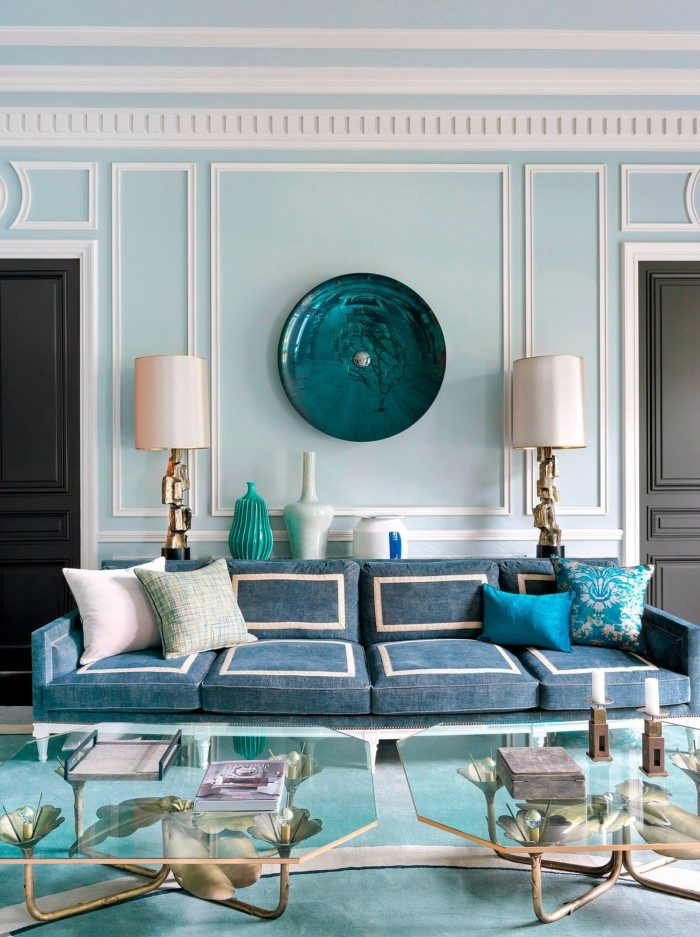
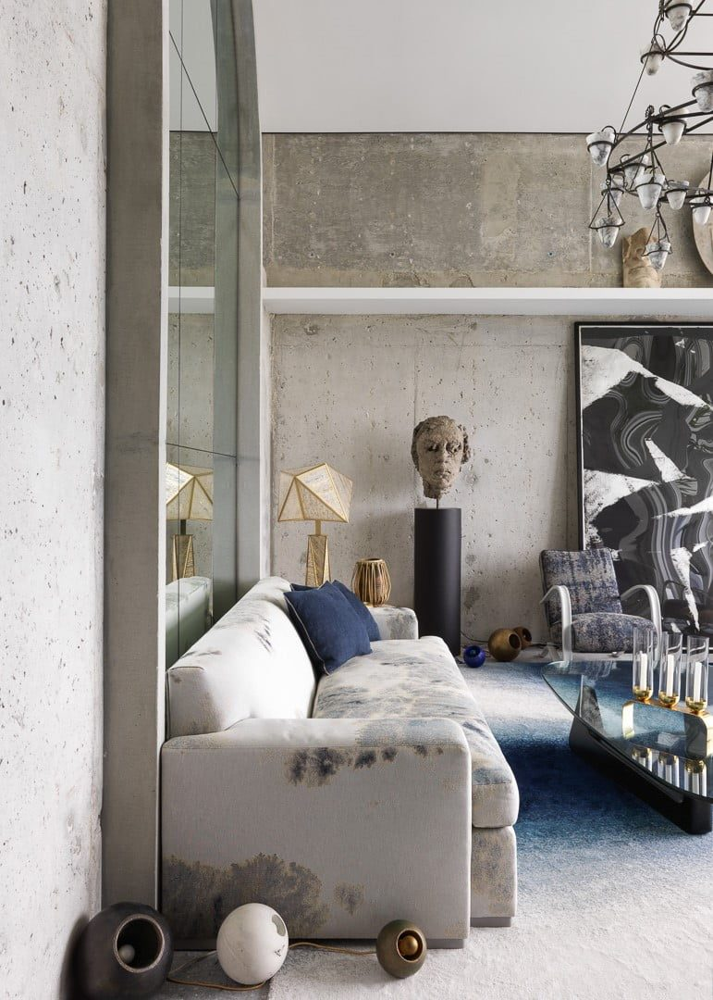

Bien choisir les couleurs d’un intérieur
Partir d’un élément fixe, limiter la palette et tester les teintes à la lumière du jour.
Conseils simples sur les couleurs, les petits espaces, les matériaux et le confort sous climat chaud.

Partir d’un élément fixe, limiter la palette et tester les teintes à la lumière du jour.

Mesurer, garder une circulation libre et choisir des meubles qui font plusieurs choses.

Bois, fibres, terre cuite et pierre : des matières adaptées au climat et à l’artisanat de la région.

Ventilation, protection du soleil et matières fraîches pour mieux supporter la chaleur.

Des formes simples, des matières artisanales et une ou deux pièces fortes.

Six pièges à éviter avant d’acheter ou de peindre.
Ces articles sont rédigés par les étudiants du studio comme des conseils généraux. Les images servent d’inspiration (voir SOURCES.md).
Commencez par ce qui ne change pas : le sol, un meuble que vous gardez, une grande ouverture. Ces éléments imposent déjà une dominante chaude ou froide, et la palette doit s’y accorder.
Une règle simple aide beaucoup : environ 60 % d’une teinte dominante (murs, grands volumes), 30 % d’une teinte secondaire (mobilier, rideaux) et 10 % d’une couleur d’accent (coussins, objets). Cela évite l’effet « trop chargé ».
Testez toujours un échantillon sur le mur, à plusieurs heures de la journée : la lumière du Nord-Cameroun, très vive, éclaircit les couleurs. Une teinte qui semble douce sur un nuancier peut paraître presque blanche en plein soleil.
Pour STUDIO ESPACE, nous aimons associer un vert profond, un beige sable et un blanc cassé : trois teintes naturelles, faciles à accompagner avec du bois et des fibres.
Avant d’acheter un meuble, mesurez la pièce et dessinez un plan simple, même à main levée. Prévoyez un passage d’environ 80 cm pour circuler sans se frotter aux meubles.
Préférez un mobilier multifonction : pouf-coffre, table basse avec rangement, banquette avec tiroirs. Un canapé aux lignes droites et aux pieds visibles allège l’espace.
Les teintes claires et un grand miroir agrandissent visuellement. Pensez aussi à la hauteur : des étagères hautes ou des rideaux posés près du plafond font paraître la pièce plus haute.
Enfin, répartissez la lumière : une lampe d’appoint et un éclairage indirect créent plus de profondeur qu’un seul plafonnier.
Les matériaux locaux réduisent souvent les coûts de transport, soutiennent les artisans de la région et s’adaptent bien au climat : bois, rotin ou raphia, terre cuite, pierre, tissus tissés.
Le bois apporte de la chaleur et se travaille bien en menuiserie sur mesure : choisissez-le issu de filières légales et bien séché pour qu’il ne se déforme pas. La vannerie et les fibres naturelles conviennent aux suspensions, aux assises et aux paniers de rangement.
La terre cuite et la pierre, plus fraîches au toucher, sont de bons choix pour les sols et les murs d’accent.
Selon les ressources de votre ville, renseignez-vous auprès des artisans pour connaître les matières réellement disponibles et leurs délais.
Dans le climat chaud du Nord-Cameroun, le confort commence par le soleil : protégez les ouvertures exposées par des débords de toit, des brise-soleil, des volets ou des rideaux épais en journée.
La ventilation naturelle est un allié gratuit : ouvrir des fenêtres sur deux façades opposées crée un courant d’air qui rafraîchit la pièce. Un ventilateur de plafond complète efficacement ce courant.
Les murs épais et les matériaux lourds (béton, brique, terre) stockent la fraîcheur de la nuit. Des couleurs claires en toiture et sur les façades exposées limitent l’échauffement.
À l’intérieur, privilégiez des tissus légers (coton, lin) et des sols frais. Des plantes en pot près des fenêtres adoucissent aussi l’ambiance.
Ces conseils sont des principes généraux ; pour un projet réel, une étude adaptée au bâtiment reste nécessaire.
Associer design contemporain et inspirations africaines, c’est garder des lignes sobres tout en laissant parler les matières et les motifs : bois sculpté, claustras ajourés, suspensions tressées, poteries, textures de fibres.
Les claustras filtrent la lumière et laissent circuler l’air : une idée belle et utile sous un climat chaud.
L’équilibre se joue dans la mesure : choisissez une ou deux pièces fortes (une table sculptée, un mur de masques ou de motifs) et laissez le reste calme, avec des tons de terre et des canapés aux lignes épurées.
Respectez la source de vos inspirations : renseignez-vous sur le sens des objets et des motifs, et travaillez avec des artisans plutôt que d’imiter des copies industrielles.
Ne pas mesurer : un canapé trop grand ou un tapis trop petit déséquilibre la pièce. Mesurez, puis marquez l’emplacement au sol avec du ruban.
Multiplier les couleurs : au-delà de trois teintes principales, l’ensemble devient confus.
Compter sur un seul plafonnier : combinez lumière générale, lampes d’appoint et éclairage d’accent.
Coller tous les meubles aux murs : décoller légèrement le mobilier et créer des zones donne plus de vie.
Tout acheter d’un coup : un intérieur réussi se construit par étapes, avec quelques pièces durables.
Oublier la chaleur : sans ventilation ni protection solaire, même une pièce très belle reste inconfortable.